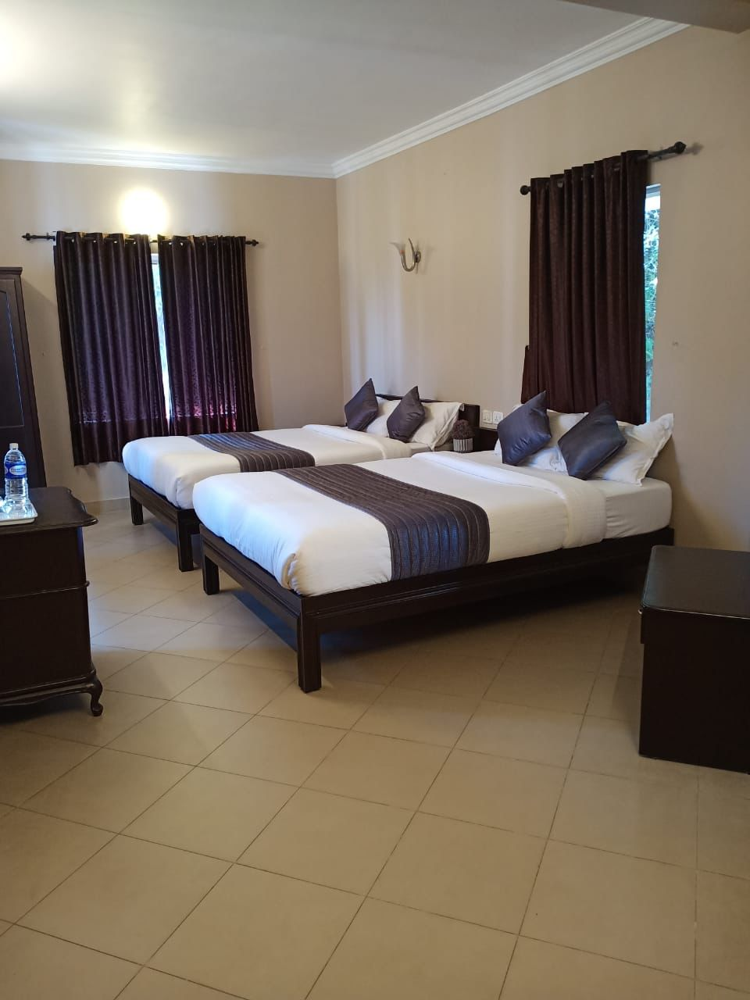

MUNNAR · 2 DAYS / 2 NIGHTS
🏨 Premium Hill View Room Stay
Enjoy a comfortable premium hill-view room stay while exploring the beautiful landscapes and attractions of Munnar.
Day 1 – Munnar Sightseeing
Rose Garden · Photo Point · Elephant Park ·
Mattupetty Tea Factory · Mattupetty Dam ·
Boating Centre · Shooting Point ·
Elephant Arrival Spot · Echo Point ·
Kundala Dam · Top Station.
Check-in stay · Dinner ·
Campfire add-on.
Day 2 – Explore Munnar
Letchmi Tea Factory · Idli Hills ·
Viriparai Waterfalls · Tiger Cave Trekking ·
Kottapara Mountain View · Spice Garden ·
Zip Line · Adventure Park · Chengulam Dam ·
Sathurangapara View · 2nd Mile View Point ·
Blossom Park.
Breakfast and dinner included.
Day 3 – Farewell
Morning wake-up · Breakfast ·
12:00 PM room check-out ·
Drop at Munnar Bus Stop.
Off Season: ₹2,999 per person for 10 members
Season Time: ₹4,899 per person for 10 members
Pickup / Drop: Munnar Bus Stop – 9:00 AM / 10:00 AM
Included: 2 Nights Stay · 2 Breakfasts · 2 Dinners · Pickup · Sightseeing Assistance
Excludes: Entry Tickets · Lunch · Boating Charges · Adventure Activities · Jeep Safari Charges